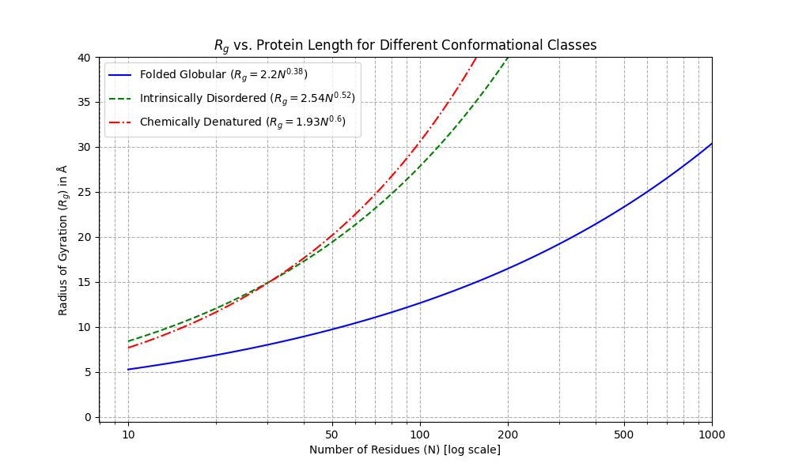

RFdiffusion Workflows

RFdiffusion-based workflows for de novo protein binder design.
Overview
The RFdiffusion workflows include:
--method rfd: Complete binder design pipeline (RFdiffusion → ProteinMPNN → AlphaFold2 initial guess → Boltz-2 refolding)--method rfd_partial: Partial diffusion refinement of existing designs or complexes (RFdiffusion Partial Diffusion → Boltz-2 refolding)
General Information
Command-line Options
For any workflow, you can see available options with --method rfd --help or --method rfd_partial --help:
nextflow run Australian-Protein-Design-Initiative/nf-binder-design \
--method rfd --help
nextflow run Australian-Protein-Design-Initiative/nf-binder-design \
--method rfd_partial --help
Parameters File
Parameter command-line options (those prefixed with --) can also be defined in a params.json file:
nextflow run Australian-Protein-Design-Initiative/nf-binder-design \
--method rfd \
-params-file params.json
eg:
{
"hotspot_res": "A473,A995,A411,A421",
"rfd_n_designs": 10
}
Parameter names typically mirror the equivalent command-line options in the underlying tools, often prefixed with rfd_ or pmpnn_ etc.
Key Outputs
Outputs are stored in the results directory by default (or the path specified by --outdir).
combined_scores.tsv: Combined scores for all designs
This file includes the key AF2 initial guess scores pae_interaction and plddt_binder, etc, as well as several shape scores (rg, dmax, etc), the binder sequence, and some extra BindCraft-style scores.
The rfdiffusion proteinmpnn and af2_initial_guess directories contain the intermediate files for these steps. The 'initial guess' complex structures are in af2_initial_guess/pdbs.
results/binders.fasta: FASTA sequences of the binders
When the --refold_af2ig_filters option is used to do Boltz-2 refolding, combined_scores.tsv includes:
boltz_confidence_scoreandboltz_iptmfor the refolded complexboltz_monomer_vs_complex_rmsd_all(the C-alpha RMSD of the binder as an unbound monomer vs the bound form in the refolded complex).
Refolded complexes and binder monomers are in results/boltz_refold/predict/complex and results/boltz_refold/predict/monomer, respectively.
In this mode, the pipeline only calculates the extra BindCraft-style scores for the Boltz-2 refolded complexes, rather than the AF2 initial guess models.
RMSD Comparisons
When Boltz-2 refolding is enabled, several C-alpha RMSD comparisons are calculated and saved to results/boltz_refold/rmsd/:
| File | Superimpose On | Measure | Interpretation |
|---|---|---|---|
rmsd_target_aligned_binder.tsv |
Target (B) | Binder (A) | Binding pose deviation after refolding |
rmsd_complex_vs_af2ig.tsv |
Both (A,B) | Both (A,B) | Overall structural agreement between AF2IG and Boltz |
rmsd_monomer_vs_af2ig.tsv |
Binder (A) | Binder (A) | Binder folding change between bound/unbound (monomer vs AF2IG complex) |
rmsd_monomer_vs_complex.tsv |
Binder (A) | Binder (A) | Binder folding change between bound/unbound (monomer vs Boltz complex) |
Each file contains rmsd_pruned (aligned core residues only) and rmsd_all (all residues) values.
Key metrics for assessing binder quality:
-
rmsd_target_aligned_binder.tsv→rmsd_all: Low values (<~3.5 Å?) indicate the binder maintains its binding pose relative to the target after Boltz refolding. High values indicate the binder is in a different binding site or pose in the Boltz-2 refolded prediction, relative to the initial AF2 initial guess. This value is included in thecombined_scores.tsvfile asboltz_target_aligned_binder_rmsd_all. -
rmsd_monomer_vs_complex.tsv→rmsd_all: Indicative of possible binder conformational changes upon binding. Low values (<~3.5 Å?) mean the binder structure is similar whether predicted alone or in complex - a good sign for a stable, foldable binder. This value is included in thecombined_scores.tsvfile asboltz_monomer_vs_complex_rmsd_all.
Binder Design with RFdiffusion (--method rfd)
Single Node or Local Workstation
Simple example for local execution:
OUTDIR=results
mkdir -p $OUTDIR/logs
nextflow run Australian-Protein-Design-Initiative/nf-binder-design \
--method rfd \
--input_pdb target.pdb \
--outdir $OUTDIR \
--contigs "[A371-508/A753-883/A946-1118/A1135-1153/0 70-100]" \
--hotspot_res "A473,A995,A411,A421" \
--rfd_n_designs=10 \
--rfd_batch_size 1 \
-with-report $OUTDIR/logs/report_$(date +%Y%m%d_%H%M%S).html \
-with-trace $OUTDIR/logs/trace_$(date +%Y%m%d_%H%M%S).txt \
-resume \
-profile local
Parallel tasks on an HPC Cluster
Here's a more complex 'kitchen sink' example using -profile slurm,m3 for the M3 HPC cluster:
#!/bin/bash
DATESTAMP=$(date +%Y%m%d_%H%M%S)
# Ensure tmp directory has enough space
export TMPDIR=$(realpath ./tmp)
export NXF_TEMP=$TMPDIR
mkdir -p $TMPDIR
# Set apptainer cache directory (change to your scratch path)
export NXF_APPTAINER_CACHEDIR=/path/to/scratch2/apptainer_cache
export NXF_APPTAINER_TMPDIR=$TMPDIR
# Load Nextflow module (if available on your HPC)
module load nextflow/24.04.3 || true
nextflow run Australian-Protein-Design-Initiative/nf-binder-design \
--method rfd \
--slurm_account=ab12 \
--input_pdb 'input/target_cropped.pdb' \
--design_name my-binder \
--outdir results \
--contigs "[B346-521/B601-696/B786-856/0 70-130]" \
--hotspot_res "B472,B476,B484,B488" \
--rfd_n_designs=1000 \
--rfd_batch_size=5 \
--rfd_filters="rg<20" \
--rfd_model_path="/models/rfdiffusion/Complex_beta_ckpt.pt" \
--rfd_extra_args='potentials.guiding_potentials=["type:binder_ROG,weight:7,min_dist:10"] potentials.guide_decay="quadratic"' \
--pmpnn_seqs_per_struct=2 \
--pmpnn_relax_cycles=5 \
--pmpnn_weigths="/models/HyperMPNN/retrained_models/v48_020_epoch300_hyper.pt" \
--af2ig_recycle=3 \
--refold_af2ig_filters="pae_interaction<=10;plddt_binder>=80" \
--refold_max=100 \
--refold_use_msa_server=true \
--refold_target_fasta='input/full/target.fasta' \
--refold_target_templates='input/full/' \
-profile slurm,m3 \
-resume \
-with-report results/logs/report_${DATESTAMP}.html \
-with-trace results/logs/trace_${DATESTAMP}.txt
Key Parameters
| Flag | Description |
|---|---|
--input_pdb |
Target protein structure |
--contigs |
Contig definition for RFdiffusion |
--hotspot_res |
Hotspot residues (comma-separated) |
--rfd_n_designs |
Number of designs to generate |
--rfd_filters |
Filter expression (e.g., "rg<20") |
--rfd_model_path |
Path to a custom RFdiffusion model |
--rfd_extra_args |
Extra arguments passed to RFdiffusion (e.g. guiding potentials) |
--pmpnn_seqs_per_struct |
Number of sequences per backbone design with ProteinMPNN |
--pmpnn_relax_cycles |
Number of FastRelax cycles for ProteinMPNN |
--pmpnn_weights |
Custom ProteinMPNN weights |
--af2ig_recycle |
Number of recycles for AF2 initial guess |
When --refold_af2ig_filters is set, designs that pass these score thresholds are refolded using Boltz-2 (both the complex and unbound binder monomer):
| Flag | Description |
|---|---|
--refold_af2ig_filters |
Filter AF2IG designs before refolding (e.g., "pae_interaction<=10;plddt_binder>=80") |
--refold_max |
Maximum number of designs to refold (e.g., 100) |
--refold_use_msa_server |
Use the public ColabFold MMSeqs2 server for MSA generation |
--refold_target_fasta |
Target FASTA for re-prediction (use full-length sequence) |
--refold_target_templates |
Directory of full-length target template PDBs |
We use -profile slurm,m3 to use pre-defined configuration files specific to the M3 HPC cluster. You could also use the -c flag to point to a custom configuration file.
--slurm_account=<your_account_id> is required if you have multiple SLURM accounts and need to use a specific one.
Other site-specific -profile options are provided in conf/platforms/:
m3- Monash M3 clusterm3_bdi- Monash M3 cluster with access to thebdipartitionsmlerp- the MLeRP HPC clusternci_gadi- NCI Gadi HPC (PBS Pro)
These can be adapted to other HPC clusters - pull requests are welcome !
FoldSeek Structural Search (Optional)
After AF2 initial guess scoring, you can optionally run FoldSeek structural similarity search on the designs. The binder chain is automatically extracted from each AF2IG complex — only the binder is searched, not the full target–binder complex.
FoldSeek summary results are output to {outdir}/foldseek/{database_name}/. See FoldSeek output format for details.
Enabling FoldSeek
Add --do_foldseek to your RFD command:
nextflow run main.nf --method rfd \
--input_pdb target.pdb --contigs "[A1-100/0 70-100]" \
--do_foldseek
Design Selection for FoldSeek
FoldSeek operates on a subset of AF2IG designs, controlled by --foldseek_af2ig_filters:
- If
--foldseek_af2ig_filtersis set: only designs passing these filters are searched - If
--foldseek_af2ig_filtersis unset (default): falls back to--refold_af2ig_filtersif set - If neither is set: all AF2IG designs are searched
This means if you are already using --refold_af2ig_filters for Boltz-2 refolding, FoldSeek will automatically search the same subset of designs. You can override this with explicit --foldseek_af2ig_filters to search a different (e.g., broader) subset.
# FoldSeek uses the same filters as refold (automatic fallback)
nextflow run main.nf --method rfd \
--input_pdb target.pdb --contigs "[A1-100/0 70-100]" \
--refold_af2ig_filters "pae_interaction<=10;plddt_binder>=80" \
--do_foldseek
# Or specify separate, broader filters to send more designs to FoldSeek
nextflow run main.nf --method rfd \
--input_pdb target.pdb --contigs "[A1-100/0 70-100]" \
--refold_af2ig_filters "pae_interaction<=10;plddt_binder>=80" \
--foldseek_af2ig_filters "pae_interaction<=15" \
--do_foldseek
All common --foldseek_* flags (database, search mode, output options, CATH annotation) are documented in the FoldSeek subworkflow docs.
Partial Diffusion on Binder Designs (--method rfd_partial)
Refine existing binder designs with partial diffusion:
OUTDIR=results
mkdir -p $OUTDIR/logs
# Generate 10 partial designs for each binder, in batches of 5
# Note the 'single quotes' around the '*.pdb' glob pattern!
nextflow run Australian-Protein-Design-Initiative/nf-binder-design \
--method rfd_partial \
--input_pdb 'my_designs/*.pdb' \
--rfd_n_partial_per_binder=10 \
--rfd_batch_size=5 \
--hotspot_res "A473,A995,A411,A421" \
--rfd_partial_T=2,5,10,20 \
-with-report $OUTDIR/logs/report_$(date +%Y%m%d_%H%M%S).html \
-with-trace $OUTDIR/logs/trace_$(date +%Y%m%d_%H%M%S).txt \
-profile local
The other --refold_ parameters, as used above for the --method rfd workflow, can also be used here if you'd like to refold the best designs with Boltz-2.
⚠️ Note - if you are applying partial diffusion to designs output from the
--method rfdworkflow, the binder will be chain A, with other chains named B, C, etc., regardless of the original target PDB chain IDs. Residue numbering is sequential 1 to N. Your hotspots should be adjusted to account for this !
Design Filter Plugin System
The --method rfd and --method rfd_partial pipelines support custom metric calculation and filtering via plugins.
Using Filters
Filtering backbone designs from RFdiffusion by radius of gyration (before passing to ProteinMPNN and AF2 initial guess):
--rfd_filters="rg<20"
Filtering AF2 initial guess designs before refolding with Boltz-2 by any of the af2ig scores (pae_interaction, binder_aligned_rmsd, pae_binder, pae_target, plddt_binder, plddt_target, plddt_total, target_aligned_rmsd),
as well as size/shape scores (rg, dmax, asphericity, approx_rh).
--refold_af2ig_filters="pae_interaction<=10;plddt_binder>=80"
Available Filters
Filters are Python scripts in bin/filters.d/. Currently available:
- rg (radius of gyration) - in
bin/filters.d/rg.py

For typical small protein binder designs up to ~120 residues, --rfd_filters="rg<=20" is typically a good radius of gyration to filter out (non-globular) long extended helices.
Creating Custom Filters
Create a new .py file in bin/filters.d/ implementing two functions:
1. register_metrics() -> list[str]
Returns list of metric names:
def register_metrics() -> list[str]:
return ["rg", "my_custom_score"]
2. calculate_metrics(pdb_files: list[str], binder_chains: list[str]) -> pd.DataFrame
Calculates metrics and returns a DataFrame:
def calculate_metrics(pdb_files: list[str], binder_chains: list[str]) -> pd.DataFrame:
# Perform calculations
# Return DataFrame with:
# - Index: design ID (PDB filename without .pdb)
# - Columns: metric names from register_metrics()
return results_df
The bin/filter_designs.py script automatically discovers and calls plugins based on filter expressions.
Examples
The examples/ directory contains complete working examples for RFdiffusion workflows:
examples/pdl1-rfd: binder design with RFdiffusion + ProteinMPNN + AlphaFold2 initial guessexamples/pdl1-rfd-partial: partial diffusion of existing designsexamples/egfr-rfd-hypermpnn: binder design with inverse folding using the HyperMPNN weights